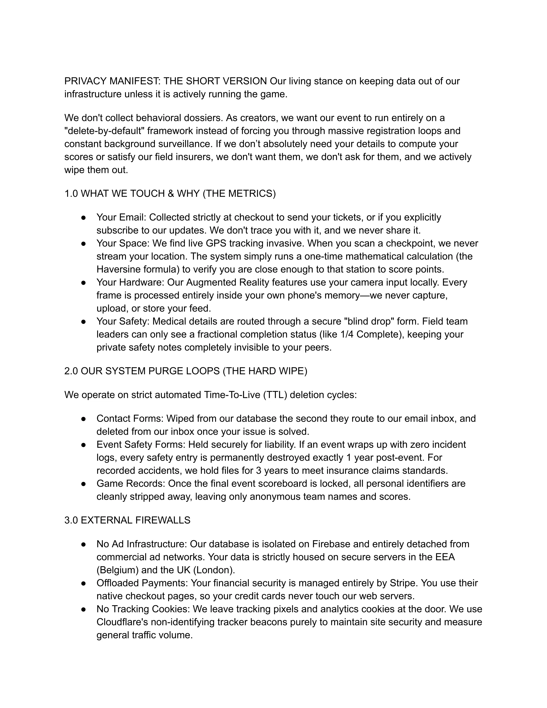
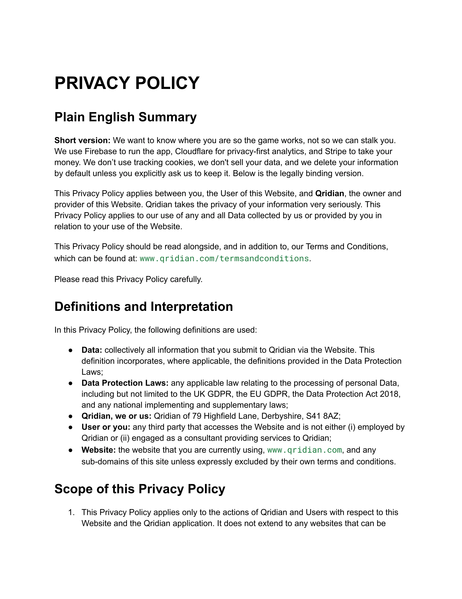
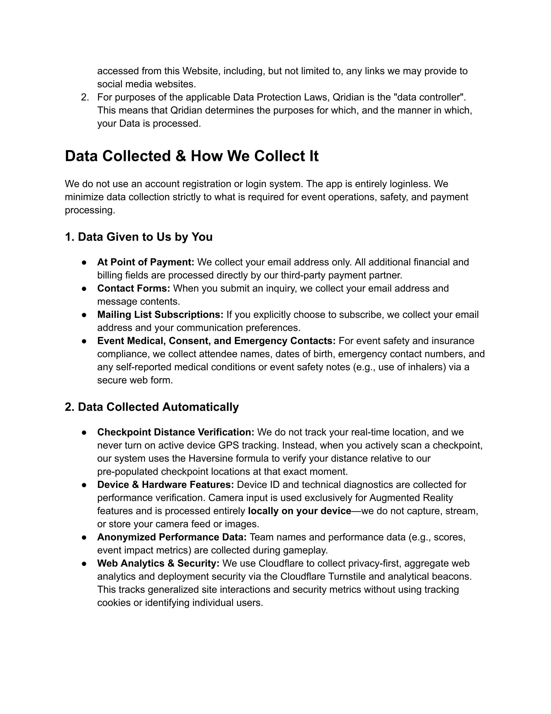
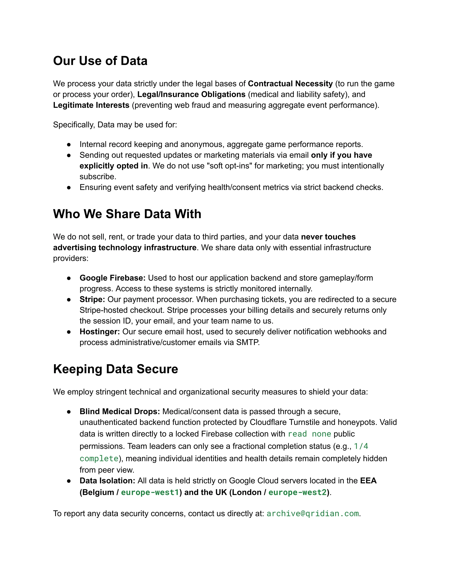
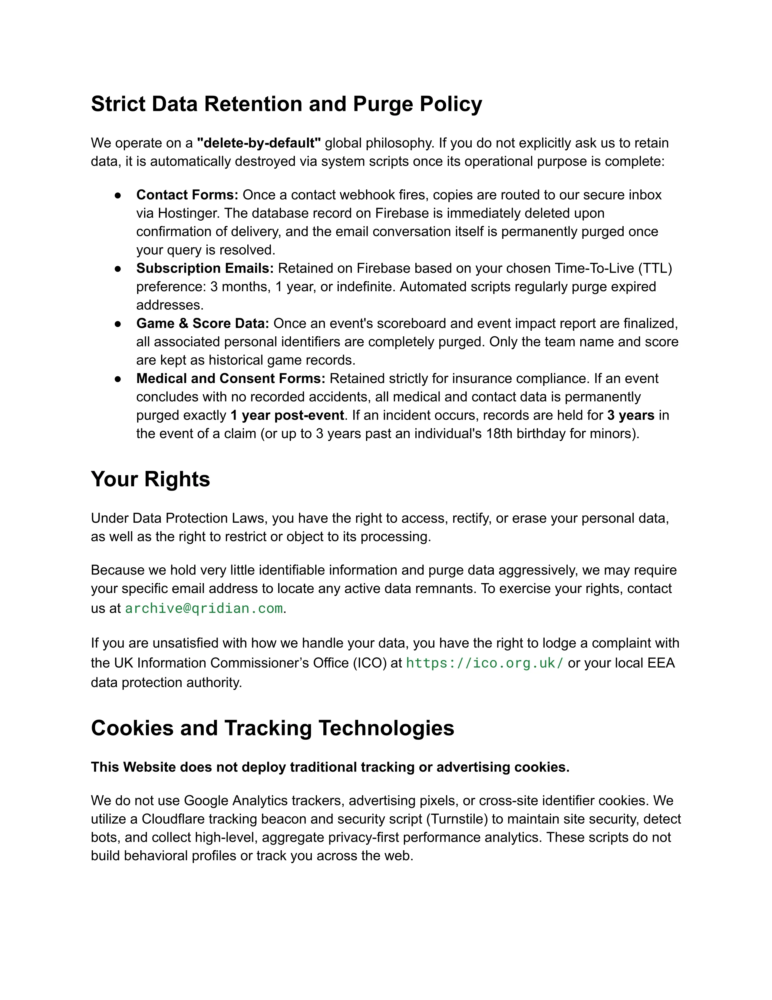
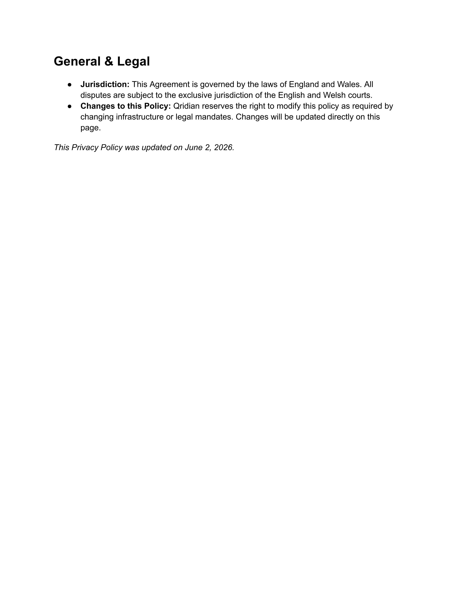

PRIVACY MANIFEST: THE SHORT VERSION Our living stance on keeping data out of our infrastructure unless it is actively running the game.
We don't collect behavioral dossiers. As creators, we want our event to run entirely on a "delete-by-default" framework instead of forcing you through massive registration loops and constant background surveillance. If we don’t absolutely need your details to compute your scores or satisfy our field insurers, we don't want them, we don't ask for them, and we actively wipe them out.
1.0 WHAT WE TOUCH & WHY (THE METRICS)
- Your Email: Collected strictly at checkout to send your tickets, or if you explicitly subscribe to our updates. We don't trace you with it, and we never share it.
- Your Space: We find live GPS tracking invasive. When you scan a checkpoint, we never stream your location. The system simply runs a one-time mathematical calculation (the Haversine formula) to verify you are close enough to that station to score points.
- Your Hardware: Our Augmented Reality features use your camera input locally. Every frame is processed entirely inside your own phone's memory—we never capture, upload, or store your feed.
- Your Safety: Medical details are routed through a secure "blind drop" form. Field team leaders can only see a fractional completion status (like 1/4 Complete), keeping your private safety notes completely invisible to your peers.
2.0 OUR SYSTEM PURGE LOOPS (THE HARD WIPE)
We operate on strict automated Time-To-Live (TTL) deletion cycles:
- Contact Forms: Wiped from our database the second they route to our email inbox, and deleted from our inbox once your issue is solved.
- Event Safety Forms: Held securely for liability. If an event wraps up with zero incident logs, every safety entry is permanently destroyed exactly 1 year post-event. For recorded accidents, we hold files for 3 years to meet insurance claims standards.
- Game Records: Once the final event scoreboard is locked, all personal identifiers are cleanly stripped away, leaving only anonymous team names and scores.
3.0 EXTERNAL FIREWALLS
- No Ad Infrastructure: Our database is isolated on Firebase and entirely detached from commercial ad networks. Your data is strictly housed on secure servers in the EEA (Belgium) and the UK (London).
- Offloaded Payments: Your financial security is managed entirely by Stripe. You use their native checkout pages, so your credit cards never touch our web servers.
- No Tracking Cookies: We leave tracking pixels and analytics cookies at the door. We use Cloudflare's non-identifying tracker beacons purely to maintain site security and measure general traffic volume.

PRIVACY POLICY
Plain English Summary
Short version: We want to know where you are so the game works, not so we can stalk you. We use Firebase to run the app, Cloudflare for privacy-first analytics, and Stripe to take your money. We don’t use tracking cookies, we don't sell your data, and we delete your information by default unless you explicitly ask us to keep it. Below is the legally binding version.
This Privacy Policy applies between you, the User of this Website, and Qridian, the owner and provider of this Website. Qridian takes the privacy of your information very seriously. This Privacy Policy applies to our use of any and all Data collected by us or provided by you in relation to your use of the Website.
This Privacy Policy should be read alongside, and in addition to, our Terms and Conditions, which can be found at: www.qridian.com/termsandconditions.
Please read this Privacy Policy carefully.
Definitions and Interpretation
In this Privacy Policy, the following definitions are used:
- Data: collectively all information that you submit to Qridian via the Website. This definition incorporates, where applicable, the definitions provided in the Data Protection Laws;
- Data Protection Laws: any applicable law relating to the processing of personal Data, including but not limited to the UK GDPR, the EU GDPR, the Data Protection Act 2018, and any national implementing and supplementary laws;
- Qridian, we or us: Qridian;
- User or you: any third party that accesses the Website and is not either (i) employed by Qridian or (ii) engaged as a consultant providing services to Qridian;
- Website: the website that you are currently using, www.qridian.com, and any sub-domains of this site unless expressly excluded by their own terms and conditions.
Scope of this Privacy Policy
- This Privacy Policy applies only to the actions of Qridian and Users with respect to this Website and the Qridian application. It does not extend to any websites that can be

- accessed from this Website, including, but not limited to, any links we may provide to social media websites.
- For purposes of the applicable Data Protection Laws, Qridian is the "data controller". This means that Qridian determines the purposes for which, and the manner in which, your Data is processed.
Data Collected & How We Collect It
We do not use an account registration or login system. The app is entirely loginless. We minimize data collection strictly to what is required for event operations, safety, and payment processing.
1. Data Given to Us by You
- At Point of Payment: We collect your email address only. All additional financial and billing fields are processed directly by our third-party payment partner.
- Contact Forms: When you submit an inquiry, we collect your email address and message contents.
- Mailing List Subscriptions: If you explicitly choose to subscribe, we collect your email address and your communication preferences.
- Event Medical, Consent, and Emergency Contacts: For event safety and insurance compliance, we collect attendee names, dates of birth, emergency contact numbers, and any self-reported medical conditions or event safety notes (e.g., use of inhalers) via a secure web form.
2. Data Collected Automatically
- Checkpoint Distance Verification: We do not track your real-time location, and we never turn on active device GPS tracking. Instead, when you actively scan a checkpoint, our system uses the Haversine formula to verify your distance relative to our pre-populated checkpoint locations at that exact moment.
- Device & Hardware Features: Device ID and technical diagnostics are collected for performance verification. Camera input is used exclusively for Augmented Reality features and is processed entirely locally on your device—we do not capture, stream, or store your camera feed or images.
- Anonymized Performance Data: Team names and performance data (e.g., scores, event impact metrics) are collected during gameplay.
- Web Analytics & Security: We use Cloudflare to collect privacy-first, aggregate web analytics and deployment security via the Cloudflare Turnstile and analytical beacons. This tracks generalized site interactions and security metrics without using tracking cookies or identifying individual users.

Our Use of Data
We process your data strictly under the legal bases of Contractual Necessity (to run the game or process your order), Legal/Insurance Obligations (medical and liability safety), and Legitimate Interests (preventing web fraud and measuring aggregate event performance).
Specifically, Data may be used for:
- Internal record keeping and anonymous, aggregate game performance reports.
- Sending out requested updates or marketing materials via email only if you have explicitly opted in. We do not use "soft opt-ins" for marketing; you must intentionally subscribe.
- Ensuring event safety and verifying health/consent metrics via strict backend checks.
Who We Share Data With
We do not sell, rent, or trade your data to third parties, and your data never touches advertising technology infrastructure. We share data only with essential infrastructure providers:
- Google Firebase: Used to host our application backend and store gameplay/form progress. Access to these systems is strictly monitored internally.
- Stripe: Our payment processor. When purchasing tickets, you are redirected to a secure Stripe-hosted checkout. Stripe processes your billing details and securely returns only the session ID, your email, and your team name to us.
- Hostinger: Our secure email host, used to securely deliver notification webhooks and process administrative/customer emails via SMTP.
Keeping Data Secure
We employ stringent technical and organizational security measures to shield your data:
- Blind Medical Drops: Medical/consent data is passed through a secure, unauthenticated backend function protected by Cloudflare Turnstile and honeypots. Valid data is written directly to a locked Firebase collection with read none public permissions. Team leaders can only see a fractional completion status (e.g., 1/4 complete), meaning individual identities and health details remain completely hidden from peer view.
- Data Isolation: All data is held strictly on Google Cloud servers located in the EEA (Belgium / europe-west1) and the UK (London / europe-west2).
To report any data security concerns, contact us directly at: archive@qridian.com.

Strict Data Retention and Purge Policy
We operate on a "delete-by-default" global philosophy. If you do not explicitly ask us to retain data, it is automatically destroyed via system scripts once its operational purpose is complete:
- Contact Forms: Once a contact webhook fires, copies are routed to our secure inbox via Hostinger. The database record on Firebase is immediately deleted upon confirmation of delivery, and the email conversation itself is permanently purged once your query is resolved.
- Subscription Emails: Retained on Firebase based on your chosen Time-To-Live (TTL) preference: 3 months, 1 year, or indefinite. Automated scripts regularly purge expired addresses.
- Game & Score Data: Once an event's scoreboard and event impact report are finalized, all associated personal identifiers are completely purged. Only the team name and score are kept as historical game records.
- Medical and Consent Forms: Retained strictly for insurance compliance. If an event concludes with no recorded accidents, all medical and contact data is permanently purged exactly 1 year post-event. If an incident occurs, records are held for 3 years in the event of a claim (or up to 3 years past an individual's 18th birthday for minors).
Your Rights
Under Data Protection Laws, you have the right to access, rectify, or erase your personal data, as well as the right to restrict or object to its processing.
Because we hold very little identifiable information and purge data aggressively, we may require your specific email address to locate any active data remnants. To exercise your rights, contact us at archive@qridian.com.
If you are unsatisfied with how we handle your data, you have the right to lodge a complaint with the UK Information Commissioner’s Office (ICO) at https://ico.org.uk/ or your local EEA data protection authority.
Cookies and Tracking Technologies
This Website does not deploy traditional tracking or advertising cookies.
We do not use Google Analytics trackers, advertising pixels, or cross-site identifier cookies. We utilize a Cloudflare tracking beacon and security script (Turnstile) to maintain site security, detect bots, and collect high-level, aggregate privacy-first performance analytics. These scripts do not build behavioral profiles or track you across the web.

General & Legal
- Jurisdiction: This Agreement is governed by the laws of England and Wales. All disputes are subject to the exclusive jurisdiction of the English and Welsh courts.
- Changes to this Policy: Qridian reserves the right to modify this policy as required by changing infrastructure or legal mandates. Changes will be updated directly on this page.
This Privacy Policy was updated on June 2, 2026.

The Boring Bit: The Rules (Plain English Summary) Short version: Don't break the law. Don't break the park. If you trip over a tree root, that's gravity, not our fault. If the app crashes, we're sorry (it's a Pilot). Be nice to the geese. Below is the legally binding version. TERMS AND CONDITIONS Please read all these Terms and Conditions. As we can accept your order and make a legally enforceable agreement without further reference to you, you must read these Terms and Conditions to make sure that they contain all that you want and nothing that you are not happy with. Application 1. These Terms and Conditions will apply to the purchase of the services and goods by you (the Customer or you). We are Qridian with email address archive@qridian.com; (the Supplier or us or we). 2. These are the terms on which we sell all Services to you. By ordering any of the Services, you agree to be bound by these Terms and Conditions. You can only purchase the Services and Goods from the Website if you are eligible to enter into a contract and are at least 18 years old. Interpretation 3. Consumer means an individual acting for purposes which are wholly or mainly outside their trade, business, craft or profession; 4. 5. Contract means the legally-binding agreement between you and us for the supply of the Services; Delivery Location means the Supplier's premises or other location where the Services are to be supplied, as set out in the Order; 6. Durable Medium means paper or email, or any other medium that allows information to be addressed personally to the recipient, enables the recipient to store the information in a way accessible for future reference for a period that is long enough for the purposes of the information, and allows the unchanged reproduction of the information stored; 7. Goods means any goods that we supply to you with the Services, of the number and description as set out in the Order; 8. Order means the Customer's order for the Services from the Supplier as submitted following the step by step process set out on the Website; 9. Privacy Policy means the terms which set out how we will deal with confidential and personal information received from you via the Website; 10. Services means the services advertised on the Website, including any Goods, of the number and description set out in the Order; 11. Services 12. Website means our website www.qridian.com on which the Services are advertised. The description of the Services and any Goods is as set out in the Website, catalogues, brochures or other form of advertisement. Any description is for illustrative purposes only and there may be small discrepancies in the size and colour of any Goods supplied. 13. In the case of Services and any Goods made to your special requirements, it is your responsibility to ensure that any information or specification you provide is accurate.

All Services which appear on the Website are subject to availability. 14. 15. We can make changes to the Services which are necessary to comply with any applicable law or safety requirement. We will notify you of these changes. Customer Responsibilities 16. You must co-operate with us in all matters relating to the Services, provide us and our authorised employees and representatives with access to any premises under your control as required, provide us with all information required to perform the Services and obtain any necessary licences and consents (unless otherwise agreed). 17. Failure to comply with the above is a Customer default which entitles us to suspend performance of the Services until you remedy it or if you fail to remedy it following our request, we can terminate the Contract with immediate effect on written notice to you. Personal Information 18. 19. We retain and use all information strictly under the Privacy Policy. We may contact you by using e-mail or other electronic communication methods and by pre-paid post and you expressly agree to this. Basis of Sale 20. The description of the Services and any Goods in our website does not constitute a contractual offer to sell the Services or Goods. When an Order has been submitted on the Website, we can reject it for any reason, although we will try to tell you the reason without delay. 21. The Order process is set out on the Website. Each step allows you to check and amend any errors before submitting the Order. It is your responsibility to check that you have used the ordering process correctly. 22. A Contract will be formed for the Services ordered only when you receive an email from us confirming the Order (Order Confirmation). You must ensure that the Order Confirmation is complete and accurate and inform us immediately of any errors. We are not responsible for any inaccuracies in the Order placed by you. By placing an Order you agree to us giving you confirmation of the Contract by means of an email with all information in it (ie the Order Confirmation). You will receive the Order Confirmation within a reasonable time after making the Contract, but in any event not later than the delivery of any Goods supplied under the Contract, and before performance begins of any of the Services. 23. Any quotation or estimate of Fees (as defined below) is valid for a maximum period of 14 days from its date, unless we expressly withdraw it at an earlier time. 24. No variation of the Contract, whether about description of the Services, Fees or otherwise, can be made after it has been entered into unless the variation is agreed by the Customer and the Supplier in writing. 25. We intend that these Terms and Conditions apply only to a Contract entered into by you as a Consumer. If this is not the case, you must tell us, so that we can provide you with a different contract with terms which are more appropriate for you and which might, in some respects, be better for you, eg by giving you rights as a business. Fees and Payment 26. The fees (Fees) for the Services, the price of any Goods (if not included in the Fees) and any additional delivery or other charges is that set out on the Website at the date we accept the Order or such other price as we may agree in writing. Prices for Services may be calculated on a fixed price or on a standard daily rate basis. 27. 28. Fees and charges include VAT at the rate applicable at the time of the Order. You must pay by submitting your credit or debit card details with your Order and we can take payment immediately or otherwise before delivery of the Services. Delivery

29. We will deliver the Services, including any Goods, to the Delivery Location by the time or within the agreed period or, failing any agreement: a. in the case of Services, within a reasonable time; and b. in the case of Goods, without undue delay and, in any event, not more than 30 days after the day on which the Contract is entered into. 30. In any case, regardless of events beyond our control, if we do not deliver the Services on time, you can require us to reduce the Fees or charges by an appropriate amount (including the right to receive a refund for anything already paid above the reduced amount). The amount of the reduction can, where appropriate, be up to the full amount of the Fees or charges. 31. In any case, regardless of events beyond our control, if we do not deliver the Goods on time, you can (in addition to any other remedies) treat the Contract at an end if: a. we have refused to deliver the Goods, or if delivery on time is essential taking into account all the relevant circumstances at the time the Contract was made, or you said to us before the Contract was made that delivery on time was essential; or b. after we have failed to deliver on time, you have specified a later period which is appropriate to the circumstances and we have not delivered within that period. 32. If you treat the Contract at an end, we will (in addition to other remedies) promptly return all payments made under the Contract. 33. If you were entitled to treat the Contract at an end, but do not do so, you are not prevented from cancelling the Order for any Goods or rejecting Goods that have been delivered and, if you do this, we will (in addition to other remedies) without delay return all payments made under the Contract for any such cancelled or rejected Goods. If the Goods have been delivered, you must return them to us or allow us to collect them from you and we will pay the costs of this. 34. If any Goods form a commercial unit (a unit is a commercial unit if division of the unit would materially impair the value of the goods or the character of the unit) you cannot cancel or reject the Order for some of those Goods without also cancelling or rejecting the Order for the rest of them. 35. We do not generally deliver to addresses outside England and Wales, Scotland, Northern Ireland, the Isle of Man and the Channels Islands. If, however, we accept an Order for delivery outside that area, you may need to pay import duties or other taxes, as we will not pay them. 36. You agree we may deliver the Goods in instalments if we suffer a shortage of stock or other genuine and fair reason, subject to the above provisions and provided you are not liable for extra charges. 37. If you or your nominee fail, through no fault of ours, to take delivery of the Services at the Delivery Location, we may charge the reasonable costs of storing and redelivering them. 38. The Goods will become your responsibility from the completion of delivery or Customer collection. You must, if reasonably practicable, examine the Goods before accepting them. Risk and Title 39. 40. Risk of damage to, or loss of, any Goods will pass to you when the Goods are delivered to you. You do not own the Goods until we have received payment in full. If full payment is overdue or a step occurs towards your bankruptcy, we can choose, by notice to cancel any delivery and end any right to use the Goods still owned by you, in which case you must return them or allow us to collect them. Withdrawal and Cancellation 41. You can withdraw the Order by telling us before the Contract is made, if you simply wish to change your mind and without giving us a reason, and without incurring any liability. 42. This is a distance contract (as defined below) which has the cancellation rights (Cancellation Rights) set out below. These Cancellation Rights, however, do not apply, to a contract for the following goods and services (with no others) in the following circumstances: a. accommodation, transport of goods, vehicle rental services, catering or services related to leisure activities, if the contract provides for a specific date or period of performance;

b. goods that are made to your specifications or are clearly personalised; c. goods which are liable to deteriorate or expire rapidly. Important Exception for Leisure Events: Please note that the Services provided by Qridian constitute "services related to leisure activities" where the contract provides for a specific date or period of performance. Therefore, pursuant to the Consumer Contracts (Information, Cancellation and Additional Charges) Regulations 2013, you do not have a statutory right to cancel this Contract once the Order is confirmed. Any refunds or cancellations are at the sole discretion of the Supplier. Right to Cancel 43. Subject as stated in these Terms and Conditions (and specifically the Leisure Activity exemption above), you can cancel this contract within 14 days without giving any reason. 44. The cancellation period will expire after 14 days from the day on which you acquire, or a third party, other than the carrier, indicated by you, acquires physical possession of the last of the Goods. In a contract for the supply of services only (without goods), the cancellation period will expire 14 days from the day the Contract was entered into. In a contract for the supply of goods over time (ie subscriptions), the right to cancel will be 14 days after the first delivery. 45. To exercise the right to cancel, you must inform us of your decision to cancel this Contract by a clear statement setting out your decision (eg a letter sent by post or email). You can use the attached model cancellation form, but it is not obligatory. In any event, you must be able to show clear evidence of when the cancellation was made, so you may decide to use the model cancellation form. 46. You can also electronically fill in and submit the model cancellation form or any other clear statement of the Customer's decision to cancel the Contract on our website www.qridian.com . If you use this option, we will communicate to you an acknowledgement of receipt of such a cancellation in a Durable Medium (eg by email) without delay. 47. To meet the cancellation deadline, it is sufficient for you to send your communication concerning your exercise of the right to cancel before the cancellation period has expired. Commencement of Services in the Cancellation Period 48. We must not begin the supply of a service (being part of the Services) before the end of the cancellation period unless you have made an express request for the service. Effects of Cancellation in the Cancellation Period 49. Except as set out below, if you cancel this Contract, we will reimburse to you all payments received from you, including the costs of delivery (except for the supplementary costs arising if you chose a type of delivery other than the least expensive type of standard delivery offered by us). Payment for Services Commenced During the Cancellation Period 50. Where a service is supplied (being part of the Service) before the end of the cancellation period in response to your express request to do so, you must pay an amount for the supply of the service for the period for which it is supplied, ending with the time when we are informed of your decision to cancel the Contract. This amount is in proportion to what has been supplied in comparison with the full coverage of the Contract. This amount is to be calculated on the basis of the total price agreed in the Contract or, if the total price were to be excessive, on the basis of the market value of the service that has been supplied, calculated by comparing prices for equivalent services supplied by other traders. You will bear no cost for supply of that service, in full or in part, in this cancellation period if that service is not supplied in response to such a request. Deduction for Goods Supplied 51. We may make a deduction from the reimbursement for loss in value of any Goods supplied, if the loss is the result of unnecessary handling by you (ie handling the Goods beyond what is necessary to establish the nature, characteristics and functioning of the Goods: eg it goes beyond the sort of handling that might be reasonably allowed in a shop). This is because you are liable for that loss and, if that deduction is not made, you must pay us the amount of that loss. Timing of Reimbursement

52. If we have not offered to collect the Goods, we will make the reimbursement without undue delay, and not later than: a. 14 days after the day we receive back from you any Goods supplied, or b. (if earlier) 14 days after the day you provide evidence that you have sent back the Goods. 53. If we have offered to collect the Goods or if no Goods were supplied or to be supplied (ie it is a contract for the supply of services only), we will make the reimbursement without undue delay, and not later than 14 days after the day on which we are informed about your decision to cancel this Contract. 54. We will make the reimbursement using the same means of payment as you used for the initial transaction, unless you have expressly agreed otherwise; in any event, you will not incur any fees as a result of the reimbursement. Returning Goods 55. If you have received physical Goods in connection with the Contract (e.g. merchandise sent by post) which you have cancelled, you must send back the Goods by post without delay and in any event not later than 14 days from the day on which you communicate to us your cancellation of this Contract. The deadline is met if you send back the Goods before the period of 14 days has expired. You agree that you will have to bear the direct cost of returning the Goods. 56. For the purposes of these Cancellation Rights, these words have the following meanings: a. distance contract means a contract concluded between a trader and a consumer under an organised distance sales or service-provision scheme without the simultaneous physical presence of the trader and the consumer, with the exclusive use of one or more means of distance communication up to and including the time at which the contract is concluded; b. sales contract means a contract under which a trader transfers or agrees to transfer the ownership of goods to a consumer and the consumer pays or agrees to pay the price, including any contract that has both goods and services as its object. Conformity 57. We have a legal duty to supply the Goods in conformity with the Contract, and will not have conformed if it does not meet the following obligation. 58. Upon delivery, the Goods will: a. be of satisfactory quality; b. be reasonably fit for any particular purpose for which you buy the Goods which, before the Contract is made, you made known to us (unless you do not actually rely, or it is unreasonable for you to rely, on our skill and judgment) and be fit for any purpose held out by us or set out in the Contract; and c. conform to their description. 59. It is not a failure to conform if the failure has its origin in your materials. 60. 61. We will supply the Services with reasonable skill and care. In relation to the Services, anything we say or write to you, or anything someone else says or writes to you on our behalf, about us or about the Services, is a term of the Contract (which we must comply with) if you take it into account when deciding to enter this Contract, or when making any decision about the Services after entering into this Contract. Anything you take into account is subject to anything that qualified it and was said or written to you by us or on behalf of us on the same occasion, and any change to it that has been expressly agreed between us (before entering this Contract or later). Duration, Termination and Suspension 62. 63. The Contract continues as long as it takes us to perform the Services. Either you or we may terminate the Contract or suspend the Services at any time by a written notice of termination or suspension to the other if that other: a. commits a serious breach, or series of breaches resulting in a serious breach, of the Contract and the breach either cannot be fixed or is not fixed within 30 days of the written notice; or

b. is subject to any step towards its bankruptcy or liquidation. 64. On termination of the Contract for any reason, any of our respective remaining rights and liabilities will not be affected. Successors and Our Sub-Contractors 65. Either party can transfer the benefit of this Contract to someone else, and will remain liable to the other for its obligations under the Contract. The Supplier will be liable for the acts of any sub-contractors who it chooses to help perform its duties. Circumstances Beyond the Control of Either Party 66. In the event of any failure by a party because of something beyond its reasonable control: a. the party will advise the other party as soon as reasonably practicable; and b. the party's obligations will be suspended so far as is reasonable, provided that that party will act reasonably, and the party will not be liable for any failure which it could not reasonably avoid, but this will not affect the Customer's above rights relating to delivery (and the right to cancel below). Privacy 67. Your privacy is critical to us. We respect your privacy and comply with the General Data Protection Regulation with regard to your personal information. 68. These Terms and Conditions should be read alongside, and are in addition to our policies, including our Privacy Policy (https://www.qridian.com/privacy-policy) and Cookies Policy (https://www.qridian.com/cookies). 69. For the purposes of these Terms and Conditions: a. 'Data Protection Laws' means any applicable law relating to the processing of Personal Data, including, but not limited to the GDPR. b. 'GDPR' means the UK General Data Protection Regulation. c. 'Data Controller', 'Personal Data' and 'Processing' shall have the same meaning as in the GDPR. 70. We are a Data Controller of the Personal Data we Process in providing the Services and Goods to you. 71. Where you supply Personal Data to us so we can provide Services and Goods to you, and we Process that Personal Data in the course of providing the Services and Goods to you, we will comply with our obligations imposed by the Data Protection Laws: a. before or at the time of collecting Personal Data, we will identify the purposes for which information is being collected; b. we will only Process Personal Data for the purposes identified; c. we will respect your rights in relation to your Personal Data; and d. we will implement technical and organisational measures to ensure your Personal Data is secure. 72. For any enquiries or complaints regarding data privacy, you can e-mail: bernie@qridian.com. Excluding Liability 73. Acknowledgement of Physical Risk By participating in the Event, you acknowledge that the Services involve physical activity in an outdoor public environment with uneven terrain, variable weather, and natural hazards (including but not limited to mud, tree roots, water, and wildlife). You agree that you participate entirely at your own risk. The Supplier is responsible for the digital content and clues, but you are responsible for your own safety and footing. We are not liable for personal injury caused by your failure to navigate the terrain safely, nor for damage to personal property (such as clothing or electronic devices) caused by weather or impact.

74. Pilot Phase / Beta Software You acknowledge that the App and Services are currently in a 'Pilot' or 'Beta' phase. The Services are provided 'as is'. While we will make every reasonable effort to ensure the App functions correctly, we do not guarantee that it will be free from bugs, GPS inaccuracies, or downtime. In the event of a significant technical failure that renders the Event unplayable, our liability is limited to a refund of the Fees paid. 75. The Supplier does not exclude liability for: (i) any fraudulent act or omission; or (ii) death or personal injury caused by negligence or breach of the Supplier's other legal obligations. Subject to this, we are not liable for (i) loss which was not reasonably foreseeable to both parties at the time when the Contract was made, or (ii) loss (eg loss of profit) to your business, trade, craft or profession which would not be suffered by a Consumer - because we believe you are not buying the Services and Goods wholly or mainly for your business, trade, craft or profession. Governing Law, Jurisdiction and Complaints 74. 75. The Contract (including any non-contractual matters) is governed by the law of England and Wales. Disputes can be submitted to the jurisdiction of the courts of England and Wales or, where the Customer lives in Scotland or Northern Ireland, in the courts of respectively Scotland or Northern Ireland. 76. We try to avoid any dispute, so we deal with complaints as follows: By email to archive@qridian.com. We aim to respond within 5 working days.. Attribution 77. These Terms and Conditions were created using a document from Rocket Lawyer (https://www.rocketlawyer.com/gb/en). Model Cancellation Form To Qridian Email address: archive@qridian.com I/We[*] hereby give notice that I/We [*] cancel my/our [*] contract of sale of the following goods [*] [for the supply of the following service [*], Ordered on [*]/received on [*]______________________(date received) Name of consumer(s): Address of consumer(s): Signature of consumer(s) (only if this form is notified on paper) Date [*] Delete as appropriate.